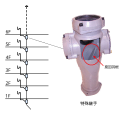

2021年
問題128 排水通気配管に関する次の記述のうち，最も不適当なものはどれか．
（1）通気管の末端を，窓・換気口等の付近に設ける場合は，その上端から600mm以上立ち上げて大気に開放する．
（2）特殊継手排水システムは，排水横枝管への接続器具数が比較的少ない集合住宅やホテルの客室系統に多く採用されている．
（3）間接排水管の管径が30mmの場合の排水口空間は，最小50mmである．
（4）結合通気管は，高層建物のブランチ間隔10以上の排水立て管において，最上階から数えてブランチ間隔10以内ごとに設置する．
（5）ループ通気管は，最上流の器具排水管が排水横枝管に接続される位置のすぐ下流から立ち上げて，通気立て管に接続する．
2021年
問題128 正解（3） 頻出度AAA
間接排水管の管径が30mmの場合の排水口空間は，最小100mmである（2021-128-1表参照）．
2021-128-1表 排水口空間
| 間接排水管の管径［mm］ | 排水口空間［mm］ |
| 25以下 | 最小50 |
| 30～50 | 最小100 |
| 65以上 | 最小150 |
| 各種飲料水用の給水タンク等 | 最小150 |
給水タンク（貯水槽）の最小150mmが頻出．
排水口空間を設けて排水の逆流を防止することを間接排水という（2021-128-1図参照）．
2021-128-1図 間接排水の例
間接排水としなければならない器具，水受け容器は，2021-128-2表参照．
2021-128-2表 間接排水とする器具等
| 区分 | 機器名称 | |
| サービス用機器 | 飲料用 | 水飲み器，飲料用冷水器，給茶器，浄水器 |
| 冷蔵用 | 冷蔵庫，冷凍庫 ，その食品冷蔵・冷凍機器 | |
| 厨房用 | 皮むき機，洗米機，製氷器，食器洗浄機，消毒器，調理用，流し（食材を溜め洗いするシンク等） | |
| 洗濯用 | 洗濯機◎，脱水機◎，洗濯機パン◎ | |
| 医療･研究用機器 | 蒸留水装置，滅菌水装置，滅菌器，滅菌装置，消毒器，洗浄機等 | |
| 水泳プール | プール自体の排水，オーバフロー排水，ろ過装置逆洗水，周辺歩道の床排水◎ | |
| 噴水 | 噴水自体の排水◎，オーバフロー排水◎，ろ過装置逆洗水◎ | |
| 配管・装置の排水 | 貯水槽・膨張水槽のオーバフロー及び排水 上水・給湯・飲料用冷水ポンプ及び露受け皿の排水◎ 上水・給湯・飲料用冷却水系統の水抜き 圧力水槽用逃がし弁及び貯湯槽からの排水 消火栓系統及びスプリンクラー系統の水抜き◎ 冷凍機◎，冷却塔◎，熱媒として水を使用する装置及び空気調和機器の排水◎ 上水用水処理装置の排水 | |
| 温水系統等の排水 | 貯湯槽・電気温水器からの排水 ボイラ◎，熱交換器◎及び蒸気管のドリップ等の排水◎ |
|
※ ◎印は，「排水口開放」でも良い機器．
排水口開放とは，排水が飛び散るのを嫌ったり，スペース的に困難な場合に，規定の排水口空間を取らない，簡易間接排水方法のことである．飲食関係や人が直接触れる水受け容器の間接排水としては認められていない（2021-128-2図参照）．
2021-128-2図 間接排水と排水口開放
-(1) 通気管の末端・大気開口部の施工2021-128-3図参照．
2021-128-3図 通気管の末端・大気開口部の施工
通気設備は，普段目にすることは少ないが，建物からの円滑な排水のためには必要不可欠な設備である．
通気設備の目的は，
1．通気することによって排水の流下による排水管内の圧力変動を緩和し排水の流れを円滑にする．
2．圧力変動，サイホン作用からトラップの封水を保護する．
3．排水管内の換気
通気方式には各個通気方式，ループ通気方式，伸頂通気方式，特殊継手排水システムがある（2021-128-4図）．
2022-128-4図 通気方式
-(2) 特殊継手排水システムは伸頂通気方式を改良したもので，排水横枝管の接続に特殊継手を用いる．内部に旋回羽根を持ち，各横枝管からの排水を立て管の内面に旋回流で流し，流速を抑えるとともに管中央部に通気のための空間を確保して，排水をスムースに流そうとするものが多い．枝管への接続器具数があまり多くない集合住宅等に多く採用されている（2021-128-5図参照）．
2021-128-5図 特殊継手排水システム

出典 SEKISUI CHEMICAL CO., LTD
https://www.eslontimes.com/system/items-view/31/
を基に作成
-(4) 結合通気管の他にも，逃し通気管，返し通気管，湿り通気管などがある（2021-128-3表，2021-128-6図参照）．
2021-128-3表 結合通気管，逃し通気管など
| 結合通気管 | 排水立て管内の圧力変化を緩和するために，排水立て管から分岐して立ち上げ，通気立て管に接続する逃し通気管をいう． 高層建築物では，ブランチ間隔※10以上の排水立て管において，最上階から数えてブランチ間隔10以内ごとに結合通気管を設ける． |
| 逃し通気管 | 排水通気両系統間の空気の流通を円滑にするために設ける通気管をいう． |
| 返し通気管 | 器具の通気管を，その器具のあふれ縁より高い位置に一度立上げ，それから折り返して立ち下げ，その器具排水管が他の排水管と合わさる直前の横走り部へ接続するか，または床下を横走りして通気立て管へ接続するものをいう． |
| 湿り通気管 | 2個以上のトラップを保護するため，器具排水管と通気管を兼用する部分をいう． |
※ブランチ間隔 二つの横枝管（ブランチ）の垂直距離が2.5mを超える場合，これを1ブランチ間隔という（2021-128-7図参照）．
2021-128-7図 ブランチ間隔

2021-128-6図 結合通気管・逃し通気管など

-(5) ループ通気管は，最下流の器具排水管を排水横枝管に接続した位置のすぐ下流からとする（2021-128-8図参照）．
上流部分は一旦汚物が入ると，普段水が流れないので洗浄されず詰まる危険が大きい．
2021-128-8図 ループ通気方式

なお，ループ通気では，多層建物の最上階を除くすべての階の大便器又は類似の器具8個以上を受け持つ排水横枝管はループ通気管を設けるほかに，その最下流における器具排水管が接続された直後の排水横枝管の下流側に，逃し通気管を設ける．